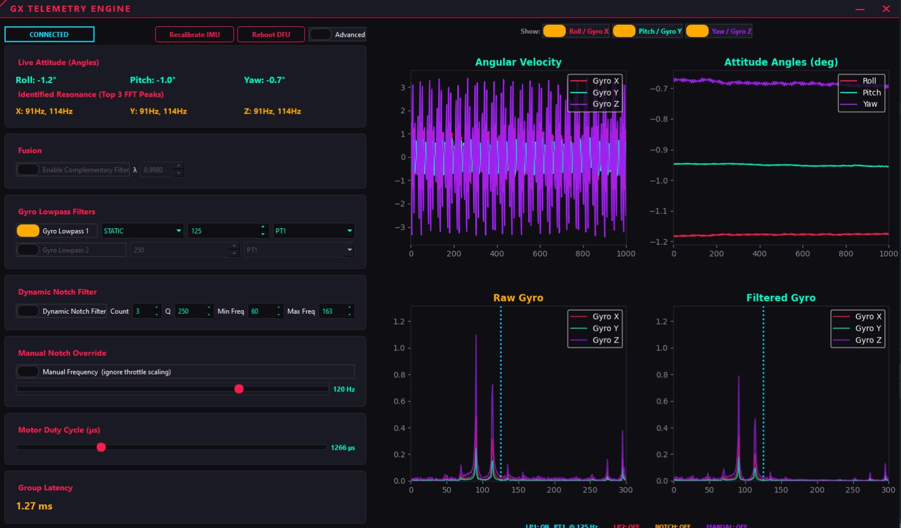

STM32G431 signal-chain testbed — 1 kHz DSP pipeline, single-axis motor arm.
Digital Signal Processing Platform
mcu:STM32G431
rate:1 kHz
payload:44-byte binary
cordic:hardware
gui:PySide6
What it is
An ultra-low-latency hardware testbed for evaluating digital signal processing pipelines on real flight-controller silicon. Runs the full Betaflight filter chain — PT1, PT2 cascaded, biquad Butterworth low-pass, and dynamic biquad notch — on an MPU6050 IMU mounted on a single-axis motor arm.
Key features
- Hardware CORDIC acceleration — single-cycle trig for biquad coefficient synthesis
- Live FFT resonance analysis — dominant vibration frequencies detected and displayed per axis
- Configurable filter chain — gyro low-pass stages, dynamic notch parameters, and manual override, all adjustable at runtime
- Real-time group delay readout — filter-induced phase lag visible in the interface
- 44-byte packed binary telemetry — magic-word locked at 1 kHz over USB CDC
- Attitude estimation — complementary filter fusion of gyro + accelerometer
Live interface
The PySide6 dashboard drives the entire testbed from a single window — filter configuration on the left, live gyro and FFT traces on the right, and real-time readouts of resonance peaks and group delay. Every parameter updates at 4 Hz while the board streams telemetry at 1 kHz.

Live control interface — filter configuration, real-time gyro, FFT resonance peaks at 91/114 Hz, and 1.27 ms group delay readout.